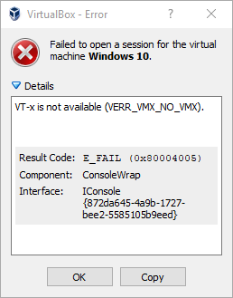

Please refer to the information provided here first. If it cannot help you to solve your issue, then contact us via email. Thank You very much, and we are very sorry that you are experiencing difficulties using virtual machines.
Frequently Asked Questions
How do I get into my BIOS?
Unfortunately, PC manufacturers are not following any generally accepted convention. You could try spamming all these keys during boot (right after powering your PC on):
- ESC
- DEL
- F1
- F2
- F10
...or if none of those seem to do the trick, you should Google your maker and model to find the correct answer.
I cannot find my virtualization option from BIOS!
As with the keys used to enter BIOS, there are no commonly accepted conventions, but here are some that might help:
- TBA
VT-x is not available?
Your hypervisor complaining that VT-x is not available is by far most likely due to the feature not being enabled in your BIOS. Did you exit BIOS and saved your changes? Could you double-check that the setting really is now enabled?
Can I run 64-bit VM in my 32-bit host OS?
Yes. You can run 64-bit virtual machines even if your operating system is 32-bit, as long as your processor is 64-bit.Please Note that your teacher may have chosen to create a virtual machine entirely of his or her own design and that the answers provided here may not apply.
TBA
Documents
Design Document (04.12.2019)
doc 2
doc 3
Contact Us
Your problem was not found or could not be solved with what was found in this page? That's no good! It's time you send us an email and let us try to help you. When you do, please try to do the following:
- Try to be very descriptive. Attaching screen captures or other images will help a lot!
- If the issue is related to hypervisor, please also let us know your operating system, version, language plus of course which hypervisor and version are you having problems with.
- Let us know which VM image you are trying to run, unless that is irrelevant to your issue.
Support email address: vm-support@utu.fi
Please allow up to 2-3 days for replies. Personnel helping you are available only 2 days per week.